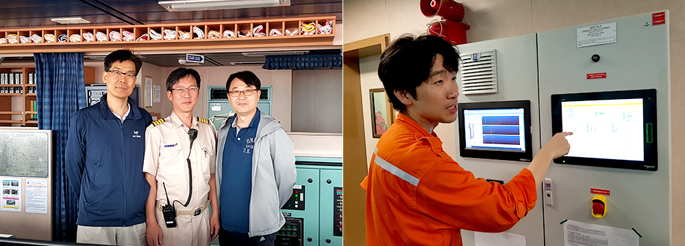
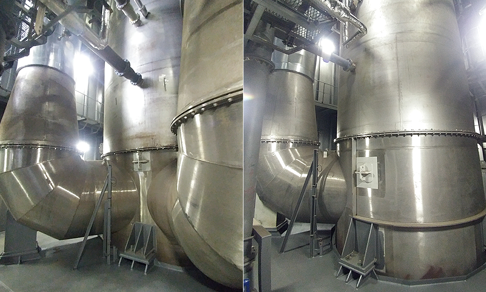
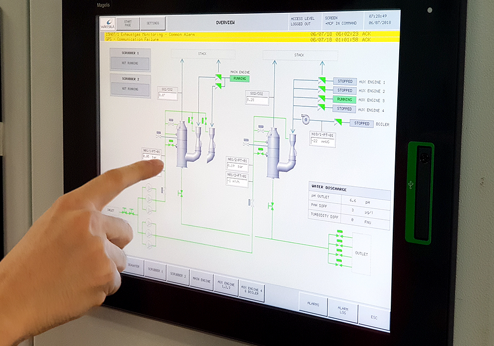
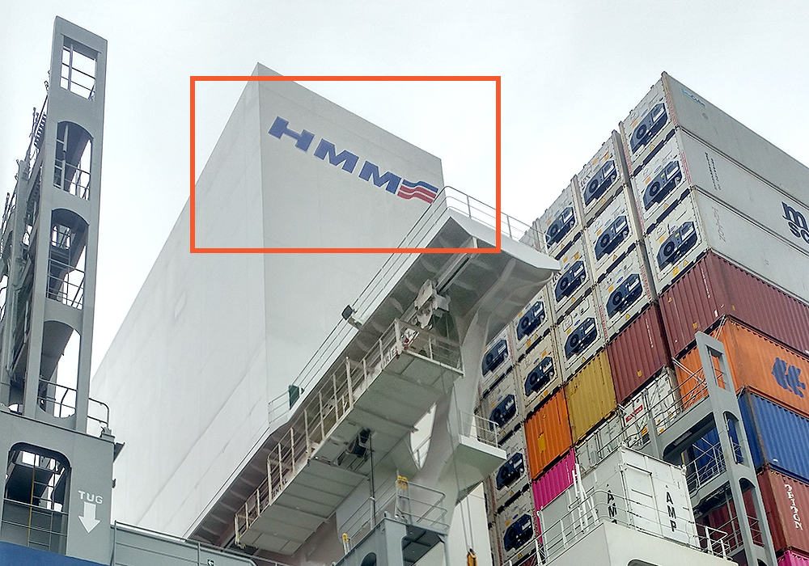
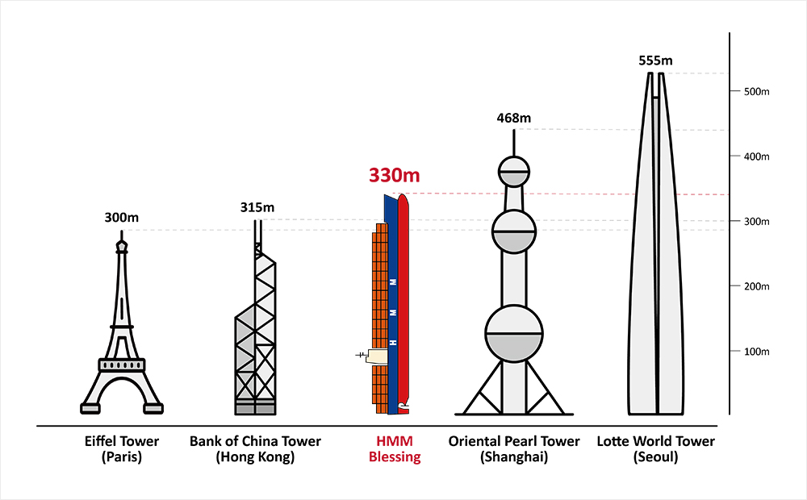

와 제 롤모델이 잡스에요!!! 아이폰 첫 출시되고 나서부터 계속 아이폰 쓰고 있는데 잡스가 너무 그리워요ㅠㅠ 지금은 돈만 벌려고 하는 것 같아서 디자인 발전도 없고ㅠㅠ와 제 롤모델이 잡스에요!!! 아이폰 첫 출시되고 나서부터 계속 아이폰 쓰고 있는데 잡스가 너무 그리워요ㅠㅠ 지금은 돈만 벌려고 하는 것 같아서 디자인 발전도 없고ㅠㅠ와 제 롤모델이 잡스에요!!! 아이폰 첫 출시되고 나서부터 계속 아이폰 쓰고 있는데 잡스가 너무 그리워요ㅠㅠ 지금은 돈만 벌려고 하는 것 같아서 디자인 발전도 없고ㅠㅠ와 제 롤모델이 잡스에요!!! 아이폰 첫 출시되고 나서부터 계속 아이폰 쓰고 있는데 잡스가 너무 그리워요ㅠㅠ 지금은 돈만 벌려고 하는 것 같아서 디자인 발전도 없고ㅠㅠ와 제 롤모델이 잡스에요!!! 아이폰 첫 출시되고 나서부터 계속 아이폰 쓰고 있는데 잡스가 너무 그리워요ㅠㅠ 지금은 돈만 벌려고 하는 것 같아서 디자인 발전도 없고ㅠㅠ
What’s Your Story
The First Scrubber Installed HMM Vessel, HMM Blessing
What’s Your Story
The First Scrubber Installed HMM Vessel, HMM Blessing
Jin, Hyungchel / HMM HQ
HMM installed scrubbers in its newly-built 11,000 TEU containerships, HMM Blessing and HMM Promise, in preparation of the 2020 environmental regulations. I got an opportunity to get on board on the first sailing of HMM Blessing with a media reporter to assist him to write an article about a scrubber system installed in a HMM vessel. We started our journey from Ningbo to Pusan and I would like to share my experience on HMM Blessing with Compass readers.

On July 5th, after finishing a simple dinner in Ningbo, China around 10:00 PM, we arrived at the container terminal – which was 1 hour from the city – with the local agency personnel for the boarding procedures. After a long 4-hour wait, the boarding procedures were finally completed and we got on board to the ship through the Gang Way of HMM Blessing after 02:00 AM.
As the purpose of this boarding was exploring scrubber systems, we first headed to the Engine Control Room (ECR) to study the newly installed scrubbers. In simple terms, the scrubber washes the sulfur dioxide, which is an acid material, with alkaline sea water. If the alkaline sea water is sprayed in small particles on the extra large pipe with the exhaust gas collected from the engine, generator and boiler, the sulfur is neutralized by a reaction with the sodium of the sea water. The exhaust gas filtered through the scrubber is exhausted to the air through the chimney in the cleanest form and the neutralized sea water is drained out of the ship again, and thus the pollution due to sulfur compound is minimized.
As the scrubber is a piece of equipment which purifies the exhaust gas, it is located at the highest part of the ECR. By going up dozens of meters through the narrow stairs and ladder of the engine room with the bare heat of the main engine, the scrubber sits, 5.3m in diameter, and a staggering 11m height, which is almost same as the height of a 3 story building, and difficult to see all at once.

The scrubber for the main engine (left image) and the scrubber for the generator/boiler (right image)
The scrubber, which is also called Venturi-Type (U-Type), because of the “ㄴ” shape venturi pipe where the exhaust gas is collected, is connected to the scrubber body and located at the top of the engine room. The scrubber for the main engine with a large amount of exhaust gas (left image) and the scrubber for generator/boiler with relatively less exhaust gas (right image) are installed in this part. They are vertically connected with various pipes which deliver the sea water into the scrubber and spray it through the six sea water pumps. Additionally, the scrubbers are made of special steels, such as molybdenum steel, which is highly resistant to corrosion due to sulfur oxides and sea water.

Through the scrubber operation panel the PH level of the purified and discharged water can be verified.
The scrubber operation panel where the PH level of the purified and discharged water can be verified has been installed within the engine room in order to be easily verified through the touch screen. The part with two venturies with the “ㄴ” shape scrubber on the left side of the screen is for the main engine with a large capacity, and the one venturi installed on the right side of the screen is the scrubber for the generator/boiler.
The chief engineer of the ship, Mr. Lee Yu-dong explained that "the engine room of HMM Blessing was designed with the latest methods considering unmanned automatization, but after the take-over of the new ship, the members of the engine room are performing night duties in turn for the stabilization of principal engine equipment such as the engine", and that, "it is very important to accumulate operation knowledge of accurate data arrangement and knowhow acquired during the actual operation of the ship more than just referencing the manufacturer's manual, because it is our first time operating with the scrubber installed."

From the exterior of the ship the part where the scrubber is installed can be seen.
The part with the blue HMM logo on the white square chimney is the part where the scrubber is installed. In the initial design of HMM Blessing when it was first ordered, no scrubber equipment was installed, but when HMM took over the HMM Blessing from Hanjin Heavy Industries Co., Ltd., the existing chimney was remodeled by adding the new scrubber equipment, thus the shape of the chimney is different from other existing ships.
I believe that installation of the scrubber will contribute largely to enhance HMM’s competitiveness and improve its profit models. Especially for the HMM Blessing, which has installed the scrubber, I think this could genuinely begin the rebound of HMM.
Lastly, I would like to express my special appreciation for the captain, Lee, Hee-Gyo and the first engineer, Choi, Jeong-Woo, who provided such thorough information about the ship and conveniences despite their busy schedules during the first sailing.

Comparison of sizes
-
Great
322
-
Like
322
-
Sad
322
-
So-so
322
-
Angry
322